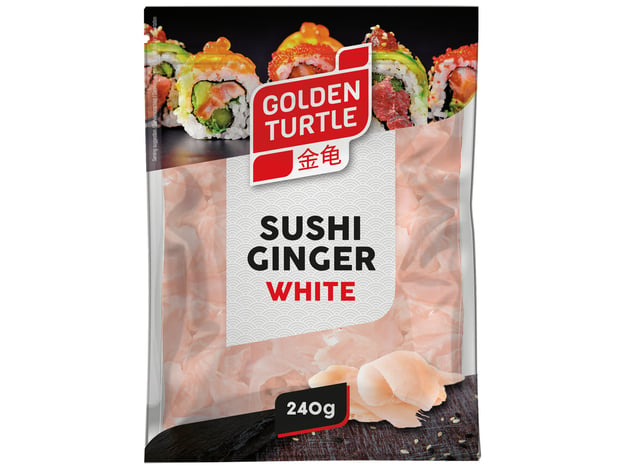
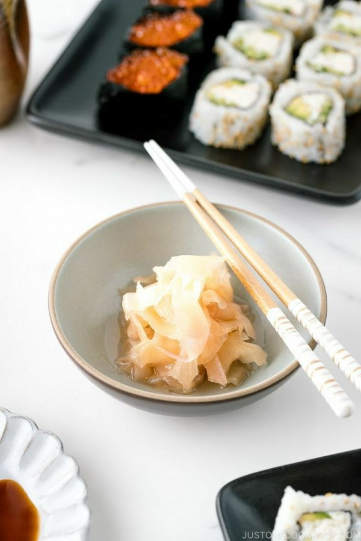

<div> <table style="border-collapse: collapse; width: 99.9809%;" border="1"><colgroup><col style="width: 49.9522%;"><col style="width: 49.9522%;"></colgroup> <tbody> <tr> <td> <div><span style="font-size: 14pt; color: #000000;"><strong>Golden Turtle Ghimbir alb murat&nbsp;</strong></span></div> <div><span style="font-size: 14pt; color: #000000;"><strong>240g</strong></span></div> <div><span style="font-size: 14pt; color: #000000;">Completeaza experienta culinara japoneza cu ghimbirul murat alb Golden Turtle. Ideal pentru a curata paleta gustativa intre diferite tipuri de sushi, acest produs ofera un gust proaspat si echilibrat. Ambalajul practic de 240g este esential in orice bucatarie care apreciaza retetele asiatice autentice si ingredientele de calitate.</span></div> </td> <td></td> </tr> <tr> <td></td> <td><span style="font-size: 14pt; color: #000000;">Savureaza ghimbirul murat alb Golden Turtle, accesoriul indispensabil pentru orice iubitor de sushi. Textura sa crocanta si aroma subtila transforma fiecare masa intr-o experienta culinara rafinata. Adauga prospetime preparatelor tale preferate si bucura-te de echilibrul perfect de arome pe care doar un ghimbir premium il poate oferi.</span></td> </tr> </tbody> </table> </div>